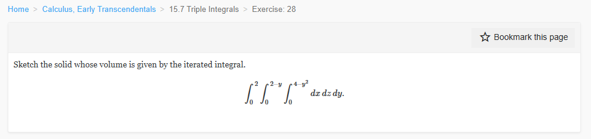

Please solve the problem in the following image.
(Image `20260928_141712_243451_utc_0800_0.png`. Alt text: Image: human_20260928_141712_243451_utc_0800)

20260928_141712_243451_utc_0800_0.png
End of problem
Answer
**Solution**
The iterated integral is
$$
V=\int_{0}^{2}\!\!\int_{0}^{2-y}\!\!\int_{0}^{4-y^{2}} dx\,dz\,dy.
$$
Read the limits from the inside out:
- The innermost integral says that for fixed $y$ and $z$, $x$ runs from $0$ to $4-y^{2}$.
- The middle integral says that for fixed $y$, $z$ runs from $0$ to $2-y$.
- The outer integral says that $y$ runs from $0$ to $2$.
Therefore the solid is the set of points
$$
E=\{(x,y,z): 0\le y\le 2,\ 0\le z\le 2-y,\ 0\le x\le 4-y^{2}\}.
$$
Equivalently, it is the region satisfying
$$
y\ge0,\quad z\ge0,\quad y+z\le2,\quad x\ge0,\quad x+y^{2}\le4.
$$
**How to sketch it**
1. **Base in the $yz$-plane.** The conditions $y\ge0$, $z\ge0$, $y+z\le2$ describe the right triangle with vertices
$$
(y,z)=(0,0),\ (2,0),\ (0,2).
$$
This triangle is the shadow of the solid on the $yz$-plane.
2. **Extent in the $x$-direction.** Over each point $(y,z)$ of that triangle, the solid extends from $x=0$ to the parabolic cylinder
$$
x=4-y^{2}.
$$
Because $x$ does not depend on $z$, the surface is a parabolic cylinder whose rulings are parallel to the $z$-axis.
3. **Bounding surfaces.** The solid is bounded by:
- $x=0$: the back triangular face with vertices $(0,0,0)$, $(0,2,0)$, $(0,0,2)$;
- $y=0$: the rectangle $0\le x\le4$, $0\le z\le2$;
- $z=0$: the bottom face over the region $0\le y\le2$, $0\le x\le4-y^{2}$;
- $z=2-y$: a flat slanted face;
- $x=4-y^{2}$: the curved parabolic top/front face.
The solid tapers to the point $(0,2,0)$ when $y=2$, because then both $x$ and $z$ are forced to be $0$.
As a consistency check, the volume is
$$
\begin{aligned}
V&=\int_{0}^{2}(4-y^{2})(2-y)\,dy\\
&=\int_{0}^{2}(8-4y-2y^{2}+y^{3})\,dy\\
&=\left[8y-2y^{2}-\frac{2}{3}y^{3}+\frac{1}{4}y^{4}\right]_{0}^{2}\\
&=16-8-\frac{16}{3}+4=\frac{20}{3}.
\end{aligned}
$$
Final answer:
$$
\boxed{\text{Solid: }0\le y\le2,\ 0\le z\le2-y,\ 0\le x\le4-y^{2};\ \text{bounded by }x=0,\ y=0,\ z=0,\ z=2-y,\ x=4-y^{2}.}
$$
---
No graphical results.